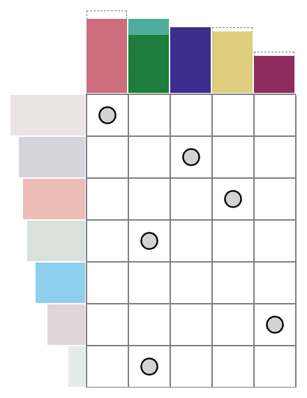

Machine Learning for Human-Centered Solutions
Interpretability, Emotion Recognition, and Therapeutic Innovation
Dominik Pegler
Overview
- Machine Learning to enhance human experience in cognitive and affective domain
- Cognitive Domain
- 1 – Interpretability of Machine-Generated Solutions
- Affective Domain
- 2 – Fear Detection
- 3 – Optimizing Exposure Therapy
- Cognitive Domain
#1
INTERPRETABILITY OF MACHINE-GENERATED SOLUTIONS TO COMBINATORIAL DESIGN PROBLEMS

Problem Setting
Machine Problem-Solving
- Increasingly taking over human domains
- AI getting more complex → black boxes → lack of trust
- Trust issues not new (Classical AI in 1950s)
Evaluating Human Interpretability
- Human-in-the-loop approach to evaluate interpretability
- Understanding how a machine makes a decision
- Critical for trust and collaboration with machines

George Dantzig (1914-2005), father of linear programming
“George Dantzig.” under CC0 1.0; from malevus.com

Human-in-the-loop: Enhanced algorithms through continuous human input.
“Human-in-the-loop” by Dominik Pegler under CC BY-SA 2.5 Generic; from Created using Google Docs
Combinatorial Design Problems

Knapsack Problem
“Knapsack” by Dake~commonswiki and Keenan Pepper under CC BY-SA 2.5 Generic; from Wikimedia Commons

{kind=link}
{kind=link}
{kind=link}
{kind=link}
Traveling Salesman Problem
“Traveling Salesmans” by Xypron under Public domain; from Wikimedia Commons
{kind=link}
{kind=link}
- Many real-world scenarios (logistics, etc.)
- Can be solved by machines optimally (e.g., with Linear Programming)
- Can be solved by humans (if problem is small enough)
→ Good setting for human-machine collaboration
Bin-Packing Problem
- Abstract representation of real-world scenarios (e.g., scheduling)
- Pack items into boxes
- Goal: Fill the boxes as much as possible
- Constraint: You cannot overfill the boxes

Figure 1: A human performing the bin packing task.
Optimal Solutions

Figure 2: The machine (CP-SAT) providing possible optimal solutions.
Question
"What makes a solution interpretable?"
H1: Heuristic
- Humans use (greedy) heuristics to solve these problems
- Similarity to greedy solution is measured by graph edit distance(Sanfeliu & Fu, 1983)
→ Solutions more interpretable if similar to the greedy solution
H2: Simplicity
- Bins can look more or less simple/complex
- Formalized as log-probability that a mixture model (2 dirichlet, 1 geometric distribution) returns for each bin composition
→ Solutions more interpretable if simple
H3: Representation
- Items and boxes can be sorted by size or at random
- Formalized as rank correlation between the actual order and the sorted order
→ Solutions more interpretable if sorted
Online-Experiment

N = 73 participants
Online-Experiment

N = 73 participants
Results Multilevel Analysis

Figure 3: Fixed Effects Estimates of Predictor Variables on Choice in Multilevel Analysis. The plot displays the estimated fixed effects (with 95% confidence intervals) for the three predictors. The effects are adjusted for random effects at the group level, highlighting the marginal impact of each predictor on the outcome variable 'choice'.
- All three predictors relevant for people's choices
- Order and Heuristic most influental
Other findings:
- Considerable participant variability in all predictors
- Self-reported problem-solving skills ("PSI") and solving performance do not moderate choice
Results Machine Learning Analysis
Results Eye-tracking Analysis
- …
- …
- …
Limitations
- Did we measure interpretability?
- Focus on small problems (diversity of solutions limited)
- Only tested for optimal solutions, no suboptimal solutions
Possible next steps
- Collaboration task
- One cognitive model instead of three
- Eye-tracking analysis
Takeaways
- Humans seem to use solving heuristics during evaluation
- Adequate visual representation is requirement
- All factors may play a bigger role in larger problems
- Validation required
#2
LEARNING AND LOCALIZING FEAR WITH COMPUTER VISION MODELS
Problem Setting
- Exposure therapy research
- Aim: computer-aided exposure therapy
- Focus on spider phobia
Problem Setting

- Stimuli = images
- Information needed, e.g., how much fear they provoke
- We collected fear ratings for a set of around 300+ spider images
- Problem: Limited to 300+
- Constantly collecting new fear ratings for each new stimulus not feasible
Deep Neural Networks
- Solution: Use deep neural networks to create larger stimulus sets (LeCun et al., 2015)
- Pre-trained on large datasets (Deng et al., 2009)
- Transfer Learning (Yosinski et al., 2014): Fine-tune on own data (300+ images with fear ratings)
- Provide a fear rating for any new image
Architecture of a convolutional neural network (CNN)
“CNN architecture.” under CC0 1.0; from developersbreach.com
Methodology
- Find deep learning architecture that is suitable for the task
- Construct training pipeline incl. cross-validation
- Learning curve analysis (how much data needed)
- Error analysis (which images are difficult for the network)
- Gradient-weighted Class Activation Mapping (Grad-CAM; Selvaraju et al., 2020) analysis to highlight most fear-related regions in each image
- Alignment analysis for Grad-CAM (incl. eye-tracking) and variance
Preliminiary results
- Predictions with ResNet50 (He et al., 2015): …
- Explainations with Grad-CAM : …
Additional Use Cases
- Content Management
- Alignment Research
#3
LEARNING OPTIMAL EXPOSURE THERAPY PROTOCOLS WITH REINFORCEMENT LEARNING

Problem Setting
- …
- …
- Reinforcement Learning (RL; Sutton & Barto, 2018)
Schedule

Summary
- …
- …
- …